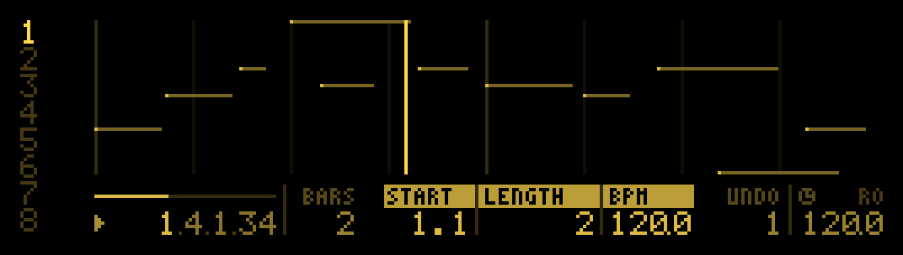

Open note or loop editing
Select a slot that contains a loop. Hold EDIT for about 0.6 seconds and release before 1.5 seconds. In NOTE_EDIT the piano roll highlights the selected note. Hold and release again for LOOP_EDIT, where the bottom row shows loop start, loop length and tempo. An empty slot opens directly in LOOP_EDIT. To return to the performance screen, hold EDIT for 1.5 seconds.
Correct a note while listening
- Select the note. The dotted bracket marks your position on the piano roll. Tap the step button for the note’s sixteenth-note position in that bar. If several notes start on the same step, tap it again to select the next one. F1 also selects notes.
- Adjust pitch and timing. F4 changes pitch. To move the note’s start, use F2 to choose the sixteenth-note position and F3 to nudge it earlier or later. To shorten or lengthen it, tap NOTELEN with the note selected. F2 and F3 now move the end of the note. Tap NOTELEN again to edit its start.
- Set velocity. Hold NOTELEN and move F4 to change the note’s MIDI velocity. A velocity of zero mutes the note. Raise it again to hear the note play.
- Keep the edit. While editing, double-tap REC to undo or triple-tap to redo. When the loop sounds right, hold EDIT for 1.5 seconds. All the note edits made during that visit now count as one undo step on this slot.

To use the rotary encoder, push it to choose pitch, start position, duration or velocity. Turn it to change the underlined value. Holding a step button while turning the encoder edits the note on that step.
Add, delete or copy notes
Tap an empty step to add a sixteenth note at MIDI note number 60, velocity 80. The OLED calls MIDI note 60 C3. At an empty bracket, tapping NOTELEN adds a thirty-second note. Double-tap a step that contains notes to delete the selected note on that step.
To copy a bar, hold its bar button until COPY opens, then release. Tap the destination bar once to replace its notes, or double-tap to add the copied notes to the notes already there. To copy one note, hold its step button without editing, release when COPY opens and choose a destination step. Pasting beyond the loop end extends the loop to the end of that bar. Tap the original bar or step once to cancel copying, or double-tap it to clear it.
Set the loop start and end
- Enter LOOP_EDIT on a recorded loop. To hear bars 2–4, hold bar button 2 and tap bar button 4. The range includes both ends. Holding 4 and tapping 2 selects the same range.
- Choose another range, such as bars 1–2. The bar numbers still refer to your original recording. Tap NOTELEN to alternate between the two ranges. Double-tap it to play the full loop.
- To loop a single bar, double-tap its bar button. To repeat a single sixteenth note’s worth of time, double-tap its step button. Hold one step and tap another to repeat everything between them. The brackets around the progress bar mark the range. Notes outside it are still there when you lengthen the loop.

F1 moves the loop start in sixteenth-note steps. With F2, choose a loop length and let the fader rest. The shortest settings are a sixteenth note, an eighth note, a quarter note, half a bar and three beats. Longer settings are 1–16 bars, then 32, 64, 96 and 128 bars. F4 sets the internal tempo from 20 to 300 BPM in whole beats per minute. F3 adjusts it in tenths of a BPM. With external MIDI Clock, set the tempo on the device sending clock.
Start with a fixed-length loop
With an empty slot selected in LOOP_EDIT, tap NOTELEN to create an empty four-bar loop. To choose another length, hold and release NOTELEN. Tap it once for the next choice or twice for the previous one. F2 also sets the length. Choose FULL, saved ranges A or B, 1–8 bars, or 16, 32, 64 or 128 bars. Stop adjusting for three seconds to keep the length. Hold NOTELEN again to cancel the changes made in this window.
Hold EDIT for 1.5 seconds to leave. Double-tap the slot button to launch the loop. When the playhead moves, tap REC to overdub. Each pass now repeats at the length you chose.